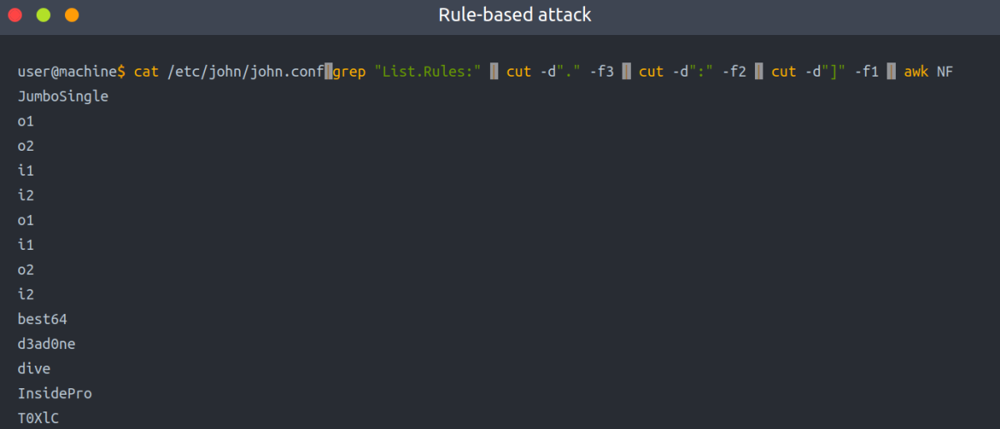
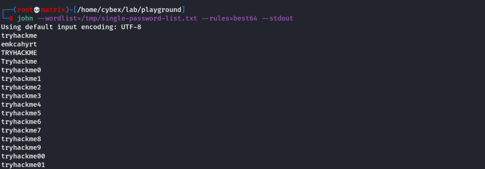
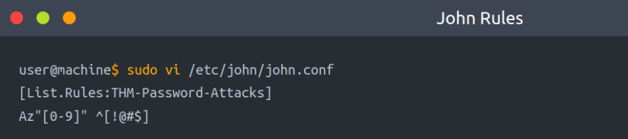
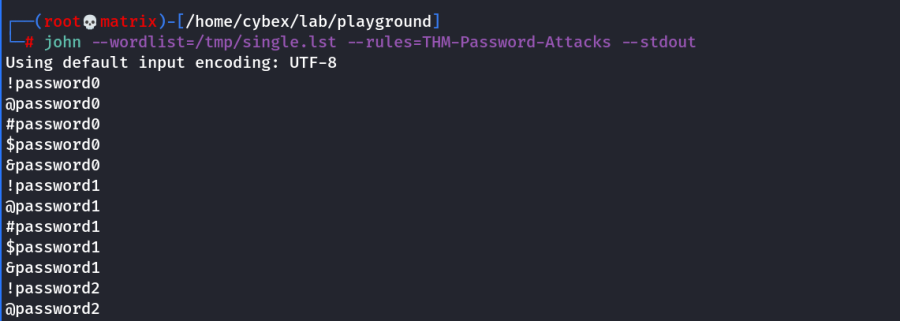

Rule-Based attacks
Rule-Based attacks are also known as hybrid attacks. Rule-Based attacks assume the attacker knows something about the password policy. Rules are applied to create passwords within the guidelines of the given password policy and should, in theory, only generate valid passwords. Using pre-existing wordlists may be useful when generating passwords that fit a policy — for example, manipulating or 'mangling' a password such as 'password': p@ssword, Pa$$word, Passw0rd, and so on.
For this attack, we can expand our wordlist using either hashcat or John the ripper. However, for this attack, let's see how John the ripper works. Usually, John the ripper has a config file that contains rule sets, which is located at /etc/john/john.conf or /opt/john/john.conf depending on your distro or how john was installed. You can read /etc/john/john.conf and look for List.Rules to see all the available rules:
cat /etc/john/john.conf | grep "List.Rules:" | cut -d"." -f3 | cut -d":" -f2 | cut -d"]" -f1 | awk NF

We can see that we have many rules that are available for us to use. We will create a wordlist with only one password containing the string tryhackme, to see how we can expand the wordlist. Let's choose one of the rules, the best64 rule, which contains the best 64 built-in John rules, and see what it can do!
Example Rule Usage:
echo tryhackme > /tmp/single-password-list.txt
john --wordlist=/tmp/single-password-list.txt --rules=best64 --stdout | wc -l

--wordlist= to specify the wordlist or dictionary file.
--rules to specify which rule or rules to use.
--stdout to print the output to the terminal.
|wc -l to count how many lines John produced.
Example Rule Usage:
john --wordlist=single-password-list.txt --rules=KoreLogic --stdout |grep "Tryh@ckm3"
The output from the previous command shows that our list has the complex version of tryhackme, which is Tryh@ckm3. Finally, we recommend checking out all the rules and finding one that works the best for you. Many rules apply combinations to an existing wordlist and expand the wordlist to increase the chance of finding a valid password!
Custom Rules
John the ripper has a lot to offer. For instance, we can build our own rule(s) and use it at run time while john is cracking the hash or use the rule to build a custom wordlist!
Let's say we wanted to create a custom wordlist from a pre-existing dictionary with custom modification to the original dictionary. The goal is to add special characters (ex: !@#$*&) to the beginning of each word and add numbers 0-9 at the end. The format will be as follows:
[symbols]word[0-9]
We can add our rule to the end of john.conf:

[List.Rules:THM-Password-Attacks] specify the rule name THM-Password-Attacks.
Az represents a single word from the original wordlist/dictionary using -p.
"[0-9]" append a single digit (from 0 to 9) to the end of the word. For two digits, we can add "[0-9][0-9]" and so on.
^[!@#$] add a special character at the beginning of each word. ^ means the beginning of the line/word. Note, changing ^ to $ will append the special characters to the end of the line/word.
We include the name of the rule we created in the John command using the --rules option. We also need to show the result in the terminal. We can do this by using --stdout as follows:
echo password > /tmp/single.lst
john --wordlist=/tmp/single.lst --rules=THM-Password-Attacks --stdout
